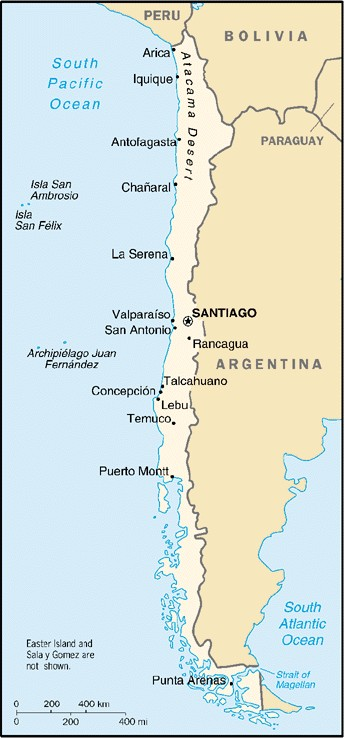

[Voir le carnet de route du Chili]
Itinéraire prévisionnel :
 Terre de feu
Terre de feu
 Punta Arenas
Punta Arenas
 Santiago : visite de la ville
Santiago : visite de la ville


Superficie : 756 945 km² (1 fois et demie la France)
Population : 15 402 000 habitants (croissance démographique 1,4%)
Capitale : Santiago (5,3 millions d’habitants)
Peuples et ethnies : métis 90%, Indiens 5%, population d’origine européenne 5%
Langues : espagnol et langues indigènes (aymara, mapuche, rapa nui)
Principales activités : mines (cuivre, 1er producteur mondial), blé, maïs et services
Visa : non
Monnaie : Le Peso Chilien (1€ = 782 Pesos en 2004). US $ conseillés. Le taux de change sur l’île n’est pas toujours intéressant, donc autant changer sur le continent.
Budget quotidien : 22 à 32 US $/jour.
- Consulat du Chili : 64 bd Latour Maubourg, 75007 Paris. _ Tél. : 01 47 05 46 61. Ouvert de 8h30 à 13h30.
Ambasssade de France :
| Adresse | Av. Condell, 65 Casilla 38-D. Providencia |
| Ville | Santiago |
| Téléphone | 56 2 4708000 |
| Fax | 56 2 4708010 |
| URL | http://www.france.cl |
Liste des médecins :
- Chirurgie :
Ville : Santiago
Nom : Dr. VERDUN Nathalie
Adresse : Guzman 56 El Golf
Téléphone : 235 59 80
Langues : Espagnol et français
Commentaire : Elle est française
- Dentiste :
Ville : Santiago
Nom : Dr. VILLANUEVA Julio
Adresse : Paul Harris 10349, office 202 Las Condes
Téléphone : 217 31 01
Langues : Espagnol et français
_Commentaire : -
Ville : Santiago
Nom : Dr. CARVAJAL Roberto
Adresse : Fidel Oteiza 1921, office 803
Téléphone : 341 24 88
Langues : Espagnol et français
Commentaire : -
- Généraliste :
Ville : Santiago
Nom : Dr. CORDIER Benoit
Adresse : Suecia 452
Téléphone : 333 03 39
Langues : Espagnol et français
Commentaire : Il est français
Ville : Santiago
Nom : Dr. HERVE Louis A
Adresse : Avenida Ricardo Lyon 396
Téléphone : 234 15 11
Langues : Espagnol, français et anglais
Commentaire : Ce médecin chilien est approuvé par l’ambassade française
- Hôpital :
Ville : Santiago
Nom : SANTA MARIA Clinic
Adresse : av. Santa Maria
Téléphone : -
Langues : Espagnol, anglais et français
Commentaire : Très bonne qualité des soins
Ville : Santiago
Nom : ALEMANA Clinic
Adresse : av. Vitacura
Téléphone : 212 97 00
Langues : Espagnol, anglais et français
Commentaire : Excellent
Ville : Santiago
Nom : CATHOLIC UNIVERSITY
Adresse : Hospital Marcoletta
Téléphone : 633 2051
Langues :
Commentaire : Le niveau des soins y est moyen
- Pharmacie :
Ville : -
Nom : -
Adresse : -
Téléphone : -
Langues : -
Commentaire : Pas de problème pour trouver de bonnes pharmacies